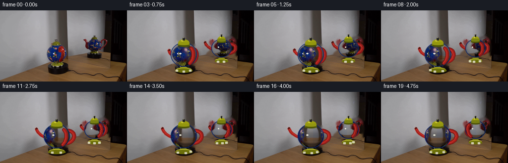
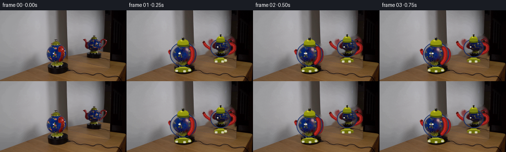
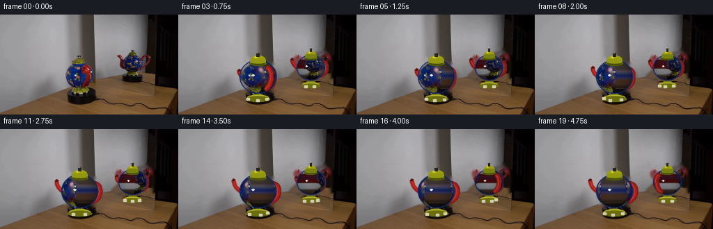
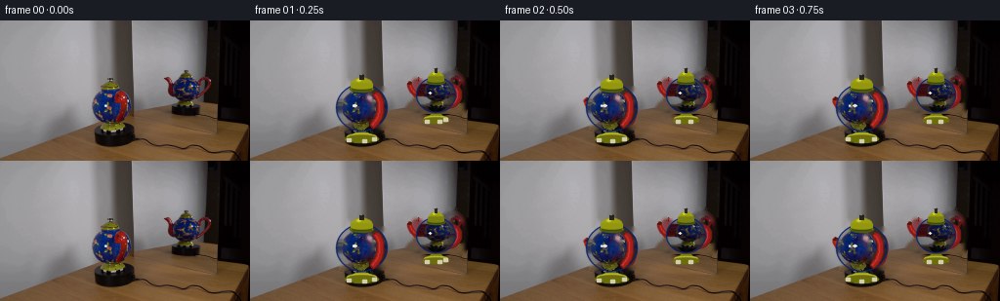
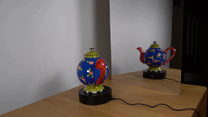
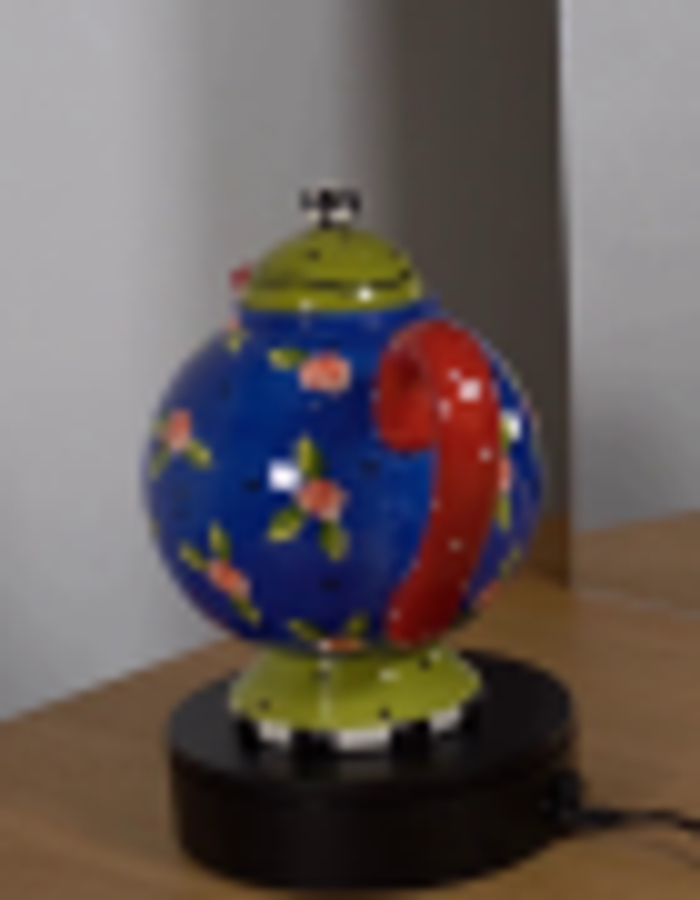
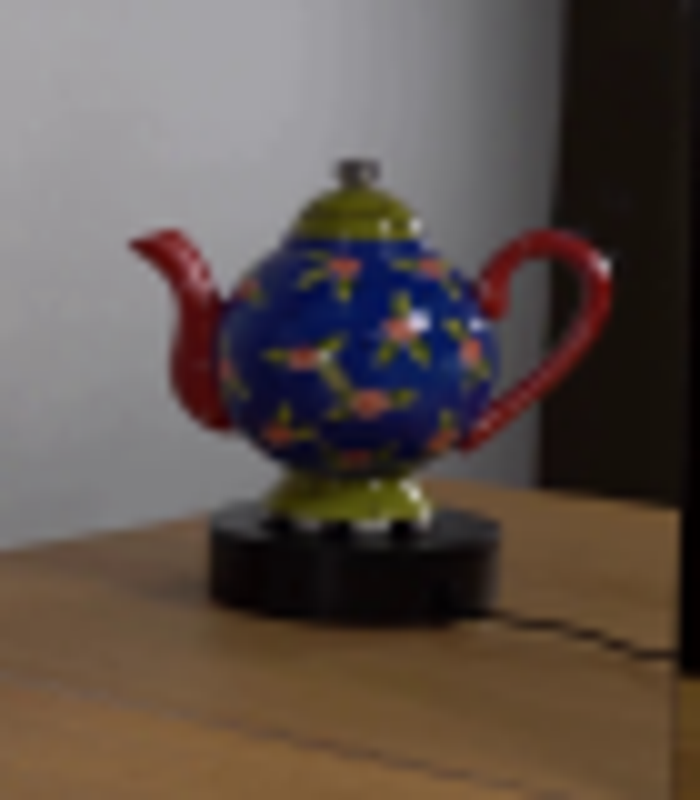
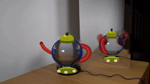

CODING AGENTS AS PIXEL WORLD MODELS
traex/GPT-5.6-Sol · 0122
点击播放 · 原生 RGB 像素
逐轮保存的候选
回放视频、检查图与代码变化。
每份候选均可单独播放。实际图片检查记录在下方工具轨迹中。
候选 01播放与检查图
点击播放 · 原生 RGB 像素


展开代码变化
--- 上一保存版本
+++ 本次保存版本
@@ -0,0 +1,229 @@
+from pathlib import Path
+import math
+import cv2
+import numpy as np
+from PIL import Image
+import artifact_io
+
+CASE = Path(__file__).resolve().parent
+SRC = np.array(Image.open(CASE/'first_frame.png').convert('RGB'))
+H,W = SRC.shape[:2]
+
+# Helpers -------------------------------------------------------------------
+def ellipse_mask(cx,cy,rx,ry):
+ yy,xx=np.mgrid[:H,:W]
+ return (((xx-cx)/rx)**2+((yy-cy)/ry)**2 <= 1).astype(np.uint8)*255
+
+def polyline(img, pts, color, thick):
+ q=np.asarray(pts,np.int32).reshape(-1,1,2)
+ cv2.polylines(img,[q],False,color,thick,cv2.LINE_AA)
+
+def bezier(p0,p1,p2,p3=None,n=40):
+ t=np.linspace(0,1,n)[:,None]
+ p0,p1,p2=np.array(p0),np.array(p1),np.array(p2)
+ if p3 is None:
+ return (1-t)**2*p0+2*(1-t)*t*p1+t*t*p2
+ p3=np.array(p3)
+ return (1-t)**3*p0+3*(1-t)**2*t*p1+3*(1-t)*t*t*p2+t**3*p3
+
+# Remove the two original pots, retaining the black turntables and cable.
+# TELEA produces a soft continuation of wall, mirror and wood grain.
+rm=np.zeros((H,W),np.uint8)
+cv2.ellipse(rm,(114,88),(29,27),0,0,360,255,-1)
+cv2.rectangle(rm,(98,59),(132,78),255,-1)
+cv2.ellipse(rm,(116,108),(22,12),0,0,360,255,-1)
+cv2.rectangle(rm,(91,67),(143,111),255,-1)
+# reflection: include its projecting spout and handle
+cv2.ellipse(rm,(190,76),(23,22),0,0,360,255,-1)
+cv2.rectangle(rm,(180,47),(201,63),255,-1)
+pts=np.array([[157,58],[169,53],[174,69],[168,89],[158,88]],np.int32)
+cv2.fillPoly(rm,[pts],255)
+cv2.ellipse(rm,(207,74),(15,23),0,0,360,255,7)
+cv2.rectangle(rm,(174,87),(207,98),255,-1)
+# only inpaint above the tops of the black bases
+bg_bgr=cv2.cvtColor(SRC,cv2.COLOR_RGB2BGR)
+bg=cv2.cvtColor(cv2.inpaint(bg_bgr,rm,4,cv2.INPAINT_TELEA),cv2.COLOR_BGR2RGB)
+
+# Correct broad background geometry where removal exposed object-colored pixels.
+# This is blended, not hard-painted, to retain the photographic grain.
+def feather_replace(base, replacement, mask, sigma=3):
+ a=cv2.GaussianBlur(mask.astype(np.float32)/255,(0,0),sigma)[...,None]
+ return np.clip(base*(1-a)+replacement*a,0,255).astype(np.uint8)
+
+# Prepare rotating texture maps from the photographed ceramic bodies. Red
+# handle pixels are removed before unwrapping so the flowers remain on glaze.
+def make_tex(cx,cy,rx,ry):
+ y0,y1=cy-ry,cy+ry+1
+ crop=SRC[y0:y1, cx-rx:cx+rx+1].copy()
+ # remove red handle/spout paint, replacing it by nearby blue glaze
+ r,g,b=crop[...,0],crop[...,1],crop[...,2]
+ red=((r>75)&(r>g*1.32)&(r>b*1.15)).astype(np.uint8)*255
+ blue=np.zeros_like(crop); blue[:]=[18,55,141]
+ inp=cv2.inpaint(cv2.cvtColor(crop,cv2.COLOR_RGB2BGR),red,3,cv2.INPAINT_TELEA)
+ clean=cv2.cvtColor(inp,cv2.COLOR_BGR2RGB)
+ # Equirectangular strip. Visible hemisphere comes directly from image;
+ # unseen half is its reflected continuation, avoiding invented hard seams.
+ tex=np.empty((crop.shape[0],360,3),np.uint8)
+ for k in range(360):
+ ph=((k+180)%360)-180
+ if -90 <= ph <= 90:
+ sx=rx+rx*math.sin(math.radians(ph))
+ elif ph>90:
+ sx=rx+rx*math.sin(math.radians(180-ph))
+ else:
+ sx=rx+rx*math.sin(math.radians(-180-ph))
+ j0=int(np.clip(math.floor(sx),0,2*rx)); j1=min(j0+1,2*rx)
+ a=sx-j0
+ tex[:,k]=np.clip(clean[:,j0]*(1-a)+clean[:,j1]*a,0,255)
+ # subtle hue/value variation distinguishes the far side
+ far=np.r_[np.arange(91,270)]
+ tex[:,far]=np.clip(tex[:,far].astype(np.float32)*np.array([.96,.98,1.02]),0,255)
+ return tex
+
+tex_fg=make_tex(114,89,26,24)
+tex_ref=make_tex(190,76,20,18)
+
+# Pot renderer ---------------------------------------------------------------
+def render_pot(img,cx,cy,rx,ry,theta,profile,scale=1.0,reflection=False):
+ """Paint one glazed teapot. profile=-1..1: side on amount and direction."""
+ # all drawing is RGB OpenCV
+ # pedestal first, atop retained photographed black turntable
+ green=(148,151,16) if not reflection else (121,128,18)
+ darkgreen=(83,91,8)
+ red=(164,31,26) if not reflection else (139,27,24)
+ red_hi=(207,55,45)
+ blue_edge=(10,37,105)
+ # local geometry
+ bottom=cy+ry
+ # foot stem and flared green saucer
+ cv2.ellipse(img,(cx,bottom+5),(max(3,int(rx*.30)),max(2,int(ry*.18))),0,0,360,darkgreen,-1,cv2.LINE_AA)
+ foot_poly=np.array([[cx-int(rx*.25),bottom+2],[cx+int(rx*.25),bottom+2],
+ [cx+int(rx*.68),bottom+9],[cx-int(rx*.68),bottom+9]],np.int32)
+ cv2.fillConvexPoly(img,foot_poly,green,cv2.LINE_AA)
+ cv2.ellipse(img,(cx,bottom+8),(int(rx*.68),max(2,int(ry*.19))),0,0,360,(107,110,10),-1,cv2.LINE_AA)
+ cv2.ellipse(img,(cx,bottom+6),(int(rx*.60),max(2,int(ry*.14))),0,180,360,(195,190,55),1,cv2.LINE_AA)
+
+ # Handle and spout are behind the ceramic body when side-on.
+ mag=abs(profile); side=1 if profile>=0 else -1
+ # spout lies opposite handle. Positive profile => spout to left.
+ spdir=-side
+ if mag>.025:
+ attach=(cx+spdir*int(rx*.72),cy-1)
+ tip=(cx+spdir*int(rx*(.94+.78*mag)),cy-int(ry*(.27+.44*mag)))
+ ctrl=(cx+spdir*int(rx*(1.05+.48*mag)),cy-int(ry*.02))
+ pts=bezier((cx+spdir*int(rx*.60),cy+int(ry*.24)),ctrl,tip,n=32)
+ polyline(img,pts,red,max(3,int(4*scale)))
+ # bright upper rim and dark lower contour
+ hi=pts.copy(); hi[:,1]-=1
+ polyline(img,hi,red_hi,1)
+ # open dark mouth at tip
+ cv2.ellipse(img,(int(tip[0]),int(tip[1])),(max(1,int(2.6*scale)),max(1,int(1.4*scale))),
+ 18*spdir,0,360,(70,23,19),-1,cv2.LINE_AA)
+
+ hside=-spdir
+ xatt=cx+hside*int(rx*.73)
+ bulge=cx+hside*int(rx*(.91+.83*mag))
+ hp=bezier((xatt,cy-int(ry*.43)),(bulge,cy-int(ry*.62)),
+ (bulge,cy+int(ry*.61)),(xatt,cy+int(ry*.63)),44)
+ polyline(img,hp,(105,26,24),max(5,int(6*scale)))
+ polyline(img,hp,red,max(3,int(4*scale)))
+ hhi=hp.copy(); hhi[:,0]-=hside
+ polyline(img,hhi,red_hi,1)
+
+ # Glazed blue spherical body, texture shifted around longitude.
+ tex=tex_ref if reflection else tex_fg
+ th=tex.shape[0]
+ x0,x1=cx-rx,cx+rx
+ y0,y1=cy-ry,cy+ry
+ for y in range(max(0,y0),min(H,y1+1)):
+ v=(y-y0)/(2*ry)
+ yy=(y-cy)/ry
+ half=math.sqrt(max(0,1-yy*yy))
+ for x in range(max(0,x0),min(W,x1+1)):
+ u=(x-cx)/rx
+ if u*u+yy*yy<=1:
+ # account for narrower horizontal circle at latitude
+ uu=np.clip(u/max(.10,half),-1,1)
+ lon=math.degrees(math.asin(uu)) + theta
+ k=int(round(lon))%360
+ sy=int(np.clip(round(v*(th-1)),0,th-1))
+ col=tex[sy,k].astype(float)
+ # spherical lighting: highlight upper left, edge darkening
+ nz=math.sqrt(max(0,1-u*u-yy*yy))
+ light=.68+.30*nz+.08*(-u)-.035*yy
+ col*=light
+ img[y,x]=np.clip(col,0,255)
+ # smooth antialiased outline
+ cv2.ellipse(img,(cx,cy),(rx,ry),0,0,360,blue_edge,1,cv2.LINE_AA)
+ # tiny white glaze glint, rotates very little with the vessel
+ gx=cx-int(rx*.30); gy=cy-int(ry*.12)
+ cv2.ellipse(img,(gx,gy),(max(1,int(rx*.09)),max(1,int(ry*.07))),0,0,360,(239,238,222),-1,cv2.LINE_AA)
+
+ # At near edge-on orientations, the handle crosses the visible front,
+ # reproducing the broad red vertical shape in the supplied first view.
+ edge=1-mag
+ if edge>.10:
+ hside=1 if profile>=0 else -1
+ xx=cx+hside*int(rx*(.52+.12*edge))
+ fp=bezier((xx,cy-int(ry*.58)),(cx+hside*int(rx*.91),cy-int(ry*.25)),
+ (cx+hside*int(rx*.79),cy+int(ry*.55)),(cx+hside*int(rx*.48),cy+int(ry*.78)),38)
+ polyline(img,fp,(112,24,20),max(5,int((4+3*edge)*scale)))
+ polyline(img,fp,red,max(3,int((3+2*edge)*scale)))
+ fhi=fp.copy(); fhi[:,0]-=1
+ polyline(img,fhi,red_hi,1)
+
+ # Green neck and lid (drawn last so their contour remains crisp).
+ necky=cy-ry+3
+ cv2.ellipse(img,(cx,necky+2),(int(rx*.47),max(2,int(ry*.14))),0,0,360,darkgreen,-1,cv2.LINE_AA)
+ cv2.rectangle(img,(cx-int(rx*.43),necky-3),(cx+int(rx*.43),necky+2),green,-1)
+ cv2.ellipse(img,(cx,necky-3),(int(rx*.43),max(2,int(ry*.16))),0,180,360,green,-1,cv2.LINE_AA)
+ cv2.ellipse(img,(cx,necky+1),(int(rx*.45),max(2,int(ry*.11))),0,0,180,(63,69,7),1,cv2.LINE_AA)
+ # lid dome
+ cv2.ellipse(img,(cx,necky-5),(int(rx*.39),max(3,int(ry*.19))),0,180,360,(158,160,17),-1,cv2.LINE_AA)
+ cv2.ellipse(img,(cx-int(rx*.12),necky-7),(max(1,int(rx*.08)),1),0,0,360,(211,206,61),-1,cv2.LINE_AA)
+ # black/silver knob
+ cv2.rectangle(img,(cx-max(1,int(2*scale)),necky-12),(cx+max(1,int(2*scale)),necky-8),(40,40,32),-1)
+ cv2.ellipse(img,(cx,necky-12),(max(1,int(2.5*scale)),max(1,int(1.3*scale))),0,0,360,(32,32,27),-1,cv2.LINE_AA)
+ cv2.line(img,(cx-1,necky-13),(cx,necky-13),(210,202,145),1,cv2.LINE_AA)
+
+ # regularly spaced pale clips on rotating green foot, shifted by theta
+ n=5
+ for j in range(n):
+ a=2*math.pi*j/n+math.radians(theta)
+ # show front half only
+ if math.sin(a)>-.15:
+ px=int(cx+rx*.54*math.cos(a)); py=int(bottom+8+ry*.10*math.sin(a))
+ cv2.rectangle(img,(px-2,py-1),(px+2,py+2),(210,207,174),-1,cv2.LINE_AA)
+
+
+def generate():
+ frames=[]
+ frames.append(SRC.copy())
+ # About a quarter turn in five seconds: clear, steady real-time rotation.
+ # Ease in minimally (motor startup) while remaining nearly constant speed.
+ for i in range(1,20):
+ theta=5.0*i
+ fr=bg.copy()
+ # Restore the photographed turntable/cable zones exactly; generated pots
+ # cover the old feet while the symmetric black platforms stay realistic.
+ # bg inpainting was restricted, but blend source bases explicitly.
+ fr[113:132,86:151]=SRC[113:132,86:151]
+ fr[96:109,166:215]=SRC[96:109,166:215]
+ # Mirror image responds oppositely: profile closes toward edge-on.
+ pref=math.cos(math.radians(theta))
+ render_pot(fr,190,76,20,18,-theta,pref,scale=.78,reflection=True)
+ # Direct view opens from edge-on toward profile.
+ pfg=math.sin(math.radians(theta))
+ render_pot(fr,114,89,26,24,theta,pfg,scale=1.0,reflection=False)
+ # Low-amplitude camera/sensor grain fixed to scene: avoids plastic areas.
+ # Keep deterministic and very subtle.
+ rng=np.random.default_rng(122)
+ grain=rng.normal(0,.38,fr.shape[:2])[:,:,None]
+ fr=np.clip(fr.astype(np.float32)+grain,0,255).astype(np.uint8)
+ frames.append(fr)
+ arr=np.stack(frames).astype(np.uint8)
+ assert np.array_equal(arr[0],SRC)
+ artifact_io.save(arr,CASE)
+
+if __name__=='__main__':
+ generate()
候选 02播放与检查图
点击播放 · 原生 RGB 像素


展开代码变化
--- 上一保存版本
+++ 本次保存版本
@@ -67,11 +67,11 @@
for k in range(360):
ph=((k+180)%360)-180
if -90 <= ph <= 90:
- sx=rx+rx*math.sin(math.radians(ph))
+ sx=rx+rx*np.clip(math.sin(math.radians(ph)),-.72,.72)
elif ph>90:
- sx=rx+rx*math.sin(math.radians(180-ph))
+ sx=rx+rx*np.clip(math.sin(math.radians(180-ph)),-.72,.72)
else:
- sx=rx+rx*math.sin(math.radians(-180-ph))
+ sx=rx+rx*np.clip(math.sin(math.radians(-180-ph)),-.72,.72)
j0=int(np.clip(math.floor(sx),0,2*rx)); j1=min(j0+1,2*rx)
a=sx-j0
tex[:,k]=np.clip(clean[:,j0]*(1-a)+clean[:,j1]*a,0,255)
@@ -107,10 +107,10 @@
mag=abs(profile); side=1 if profile>=0 else -1
# spout lies opposite handle. Positive profile => spout to left.
spdir=-side
- if mag>.025:
+ if mag>.12:
attach=(cx+spdir*int(rx*.72),cy-1)
- tip=(cx+spdir*int(rx*(.94+.78*mag)),cy-int(ry*(.27+.44*mag)))
- ctrl=(cx+spdir*int(rx*(1.05+.48*mag)),cy-int(ry*.02))
+ tip=(cx+spdir*int(rx*(.92+.46*mag)),cy-int(ry*(.27+.44*mag)))
+ ctrl=(cx+spdir*int(rx*(.98+.32*mag)),cy-int(ry*.02))
pts=bezier((cx+spdir*int(rx*.60),cy+int(ry*.24)),ctrl,tip,n=32)
polyline(img,pts,red,max(3,int(4*scale)))
# bright upper rim and dark lower contour
@@ -122,7 +122,7 @@
hside=-spdir
xatt=cx+hside*int(rx*.73)
- bulge=cx+hside*int(rx*(.91+.83*mag))
+ bulge=cx+hside*int(rx*(.87+.49*mag))
hp=bezier((xatt,cy-int(ry*.43)),(bulge,cy-int(ry*.62)),
(bulge,cy+int(ry*.61)),(xatt,cy+int(ry*.63)),44)
polyline(img,hp,(105,26,24),max(5,int(6*scale)))
@@ -161,7 +161,7 @@
# At near edge-on orientations, the handle crosses the visible front,
# reproducing the broad red vertical shape in the supplied first view.
- edge=1-mag
+ edge=max(0.0,1.0-3.0*mag)
if edge>.10:
hside=1 if profile>=0 else -1
xx=cx+hside*int(rx*(.52+.12*edge))
可观测工具轨迹
实际执行的命令与返回图片。
命令 1exit 0
/bin/bash -lc "cat prompt.txt && printf '\\n---RULES---\\n' && cat GENERATION_RULES.md"
命令 2exit 0
/bin/bash -lc "find . -maxdepth 2 -type f -printf '%p %s bytes\\n' | sort"
命令 3exit 0
/bin/bash -lc "python3 - <<'PY'
from PIL import Image
im=Image.open('first_frame.png')
print(im.size, im.mode)
PY
command -v ffmpeg || true
command -v blender || true
command -v convert || true"命令 4exit 0
/bin/bash -lc "python3 - <<'PY' for m in ['cv2','numpy','PIL','scipy']: try: x=__import__(m);print(m,'ok',getattr(x,'__version__','')) except Exception as e:print(m,e) PY sed -n '1,240p' artifact_io.py"
命令 5exit 0
/bin/bash -lc "python3 - <<'PY'
from PIL import Image
im=Image.open('first_frame.png')
im.crop((80,40,150,130)).resize((700,900)).save('.tmp/fg.png')
im.crop((155,35,225,115)).resize((700,800)).save('.tmp/refl.png')
PY"命令 6exit 0
/bin/bash -lc "cat > generate.py <<'PY'
from pathlib import Path
import math
import cv2
import numpy as np
from PIL import Image
import artifact_io
CASE = Path(__file__).resolve().parent
SRC = np.array(Image.open(CASE/'first_frame.png').convert('RGB'))
H,W = SRC.shape[:2]
# Helpers -------------------------------------------------------------------
def ellipse_mask(cx,cy,rx,ry):
yy,xx=np.mgrid[:H,:W]
return (((xx-cx)/rx)**2+((yy-cy)/ry)**2 <= 1).astype(np.uint8)*255
def polyline(img, pts, color, thick):
q=np.asarray(pts,np.int32).reshape(-1,1,2)
cv2.polylines(img,[q],False,color,thick,cv2.LINE_AA)
def bezier(p0,p1,p2,p3=None,n=40):
t=np.linspace(0,1,n)[:,None]
p0,p1,p2=np.array(p0),np.array(p1),np.array(p2)
if p3 is None:
return (1-t)**2*p0+2*(1-t)*t*p1+t*t*p2
p3=np.array(p3)
return (1-t)**3*p0+3*(1-t)**2*t*p1+3*(1-t)*t*t*p2+t**3*p3
# Remove the two original pots, retaining the black turntables and cable.
# TELEA produces a soft continuation of wall, mirror and wood grain.
rm=np.zeros((H,W),np.uint8)
cv2.ellipse(rm,(114,88),(29,27),0,0,360,255,-1)
cv2.rectangle(rm,(98,59),(132,78),255,-1)
cv2.ellipse(rm,(116,108),(22,12),0,0,360,255,-1)
cv2.rectangle(rm,(91,67),(143,111),255,-1)
# reflection: include its projecting spout and handle
cv2.ellipse(rm,(190,76),(23,22),0,0,360,255,-1)
cv2.rectangle(rm,(180,47),(201,63),255,-1)
pts=np.array([[157,58],[169,53],[174,69],[168,89],[158,88]],np.int32)
cv2.fillPoly(rm,[pts],255)
cv2.ellipse(rm,(207,74),(15,23),0,0,360,255,7)
cv2.rectangle(rm,(174,87),(207,98),255,-1)
# only inpaint above the tops of the black bases
bg_bgr=cv2.cvtColor(SRC,cv2.COLOR_RGB2BGR)
bg=cv2.cvtColor(cv2.inpaint(bg_bgr,rm,4,cv2.INPAINT_TELEA),cv2.COLOR_BGR2RGB)
# Correct broad background geometry where removal exposed object-colored pixels.
# This is blended, not hard-painted, to retain the photographic grain.
def feather_replace(base, replacement, mask, sigma=3):
a=cv2.GaussianBlur(mask.astype(np.float32)/255,(0,0),sigma)[...,None]
return np.clip(base*(1-a)+replacement*a,0,255).astype(np.uint8)
# Prepare rotating texture maps from the photographed ceramic bodies. Red
# handle pixels are removed before unwrapping so the flowers remain on glaze.
def make_tex(cx,cy,rx,ry):
y0,y1=cy-ry,cy+ry+1
crop=SRC[y0:y1, cx-rx:cx+rx+1].copy()
# remove red handle/spout paint, replacing it by nearby blue glaze
r,g,b=crop[...,0],crop[...,1],crop[...,2]
red=((r>75)&(r>g*1.32)&(r>b*1.15)).astype(np.uint8)*255
blue=np.zeros_like(crop); blue[:]=[18,55,141]
inp=cv2.inpaint(cv2.cvtColor(crop,cv2.COLOR_RGB2BGR),red,3,cv2.INPAINT_TELEA)
clean=cv2.cvtColor(inp,cv2.COLOR_BGR2RGB)
# Equirectangular strip. Visible hemisphere comes directly from image;
# unseen half is its reflected continuation, avoiding invented hard seams.
tex=np.empty((crop.shape[0],360,3),np.uint8)
for k in range(360):
ph=((k+180)%360)-180
if -90 <= ph <= 90:
sx=rx+rx*math.sin(math.radians(ph))
elif ph>90:
sx=rx+rx*math.sin(math.radians(180-ph))
else:
sx=rx+rx*math.sin(math.radians(-180-ph))
j0=int(np.clip(math.floor(sx),0,2*rx)); j1=min(j0+1,2*rx)
a=sx-j0
tex[:,k]=np.clip(clean[:,j0]*(1-a)+clean[:,j1]*a,0,255)
# subtle hue/value variation distinguishes the far side
far=np.r_[np.arange(91,270)]
tex[:,far]=np.clip(tex[:,far].astype(np.float32)*np.array([.96,.98,1.02]),0,255)
return tex
tex_fg=make_tex(114,89,26,24)
tex_ref=make_tex(190,76,20,18)
# Pot renderer ---------------------------------------------------------------
def render_pot(img,cx,cy,rx,ry,theta,profile,scale=1.0,reflection=False):
\"\"\"Paint one glazed teapot. profile=-1..1: side on amount and direction.\"\"\"
# all drawing is RGB OpenCV
# pedestal first, atop retained photographed black turntable
green=(148,151,16) if not reflection else (121,128,18)
darkgreen=(83,91,8)
red=(164,31,26) if not reflection else (139,27,24)
red_hi=(207,55,45)
blue_edge=(10,37,105)
# local geometry
bottom=cy+ry
# foot stem and flared green saucer
cv2.ellipse(img,(cx,bottom+5),(max(3,int(rx*.30)),max(2,int(ry*.18))),0,0,360,darkgreen,-1,cv2.LINE_AA)
foot_poly=np.array([[cx-int(rx*.25),bottom+2],[cx+int(rx*.25),bottom+2],
[cx+int(rx*.68),bottom+9],[cx-int(rx*.68),bottom+9]],np.int32)
cv2.fillConvexPoly(img,foot_poly,green,cv2.LINE_AA)
cv2.ellipse(img,(cx,bottom+8),(int(rx*.68),max(2,int(ry*.19))),0,0,360,(107,110,10),-1,cv2.LINE_AA)
cv2.ellipse(img,(cx,bottom+6),(int(rx*.60),max(2,int(ry*.14))),0,180,360,(195,190,55),1,cv2.LINE_AA)
# Handle and spout are behind the ceramic body when side-on.
mag=abs(profile); side=1 if profile>=0 else -1
# spout lies opposite handle. Positive profile => spout to left.
spdir=-side
if mag>.025:
attach=(cx+spdir*int(rx*.72),cy-1)
tip=(cx+spdir*int(rx*(.94+.78*mag)),cy-int(ry*(.27+.44*mag)))
ctrl=(cx+spdir*int(rx*(1.05+.48*mag)),cy-int(ry*.02))
pts=bezier((cx+spdir*int(rx*.60),cy+int(ry*.24)),ctrl,tip,n=32)
polyline(img,pts,red,max(3,int(4*scale)))
# bright upper rim and dark lower contour
hi=pts.copy(); hi[:,1]-=1
polyline(img,hi,red_hi,1)
# open dark mouth at tip
cv2.ellipse(img,(int(tip[0]),int(tip[1])),(max(1,int(2.6*scale)),max(1,int(1.4*scale))),
18*spdir,0,360,(70,23,19),-1,cv2.LINE_AA)
hside=-spdir
xatt=cx+hside*int(rx*.73)
bulge=cx+hside*int(rx*(.91+.83*mag))
hp=bezier((xatt,cy-int(ry*.43)),(bulge,cy-int(ry*.62)),
(bulge,cy+int(ry*.61)),(xatt,cy+int(ry*.63)),44)
polyline(img,hp,(105,26,24),max(5,int(6*scale)))
polyline(img,hp,red,max(3,int(4*scale)))
hhi=hp.copy(); hhi[:,0]-=hside
polyline(img,hhi,red_hi,1)
# Glazed blue spherical body, texture shifted around longitude.
tex=tex_ref if reflection else tex_fg
th=tex.shape[0]
x0,x1=cx-rx,cx+rx
y0,y1=cy-ry,cy+ry
for y in range(max(0,y0),min(H,y1+1)):
v=(y-y0)/(2*ry)
yy=(y-cy)/ry
half=math.sqrt(max(0,1-yy*yy))
for x in range(max(0,x0),min(W,x1+1)):
u=(x-cx)/rx
if u*u+yy*yy<=1:
# account for narrower horizontal circle at latitude
uu=np.clip(u/max(.10,half),-1,1)
lon=math.degrees(math.asin(uu)) + theta
k=int(round(lon))%360
sy=int(np.clip(round(v*(th-1)),0,th-1))
col=tex[sy,k].astype(float)
# spherical lighting: highlight upper left, edge darkening
nz=math.sqrt(max(0,1-u*u-yy*yy))
light=.68+.30*nz+.08*(-u)-.035*yy
col*=light
img[y,x]=np.clip(col,0,255)
# smooth antialiased outline
cv2.ellipse(img,(cx,cy),(rx,ry),0,0,360,blue_edge,1,cv2.LINE_AA)
# tiny white glaze glint, rotates very little with the vessel
gx=cx-int(rx*.30); gy=cy-int(ry*.12)
cv2.ellipse(img,(gx,gy),(max(1,int(rx*.09)),max(1,int(ry*.07))),0,0,360,(239,238,222),-1,cv2.LINE_AA)
# At near edge-on orientations, the handle crosses the visible front,
# reproducing the broad red vertical shape in the supplied first view.
edge=1-mag
if edge>.10:
hside=1 if profile>=0 else -1
xx=cx+hside*int(rx*(.52+.12*edge))
fp=bezier((xx,cy-int(ry*.58)),(cx+hside*int(rx*.91),cy-int(ry*.25)),
(cx+hside*int(rx*.79),cy+int(ry*.55)),(cx+hside*int(rx*.48),cy+int(ry*.78)),38)
polyline(img,fp,(112,24,20),max(5,int((4+3*edge)*scale)))
polyline(img,fp,red,max(3,int((3+2*edge)*scale)))
fhi=fp.copy(); fhi[:,0]-=1
polyline(img,fhi,red_hi,1)
# Green neck and lid (drawn last so their contour remains crisp).
necky=cy-ry+3
cv2.ellipse(img,(cx,necky+2),(int(rx*.47),max(2,int(ry*.14))),0,0,360,darkgreen,-1,cv2.LINE_AA)
cv2.rectangle(img,(cx-int(rx*.43),necky-3),(cx+int(rx*.43),necky+2),green,-1)
cv2.ellipse(img,(cx,necky-3),(int(rx*.43),max(2,int(ry*.16))),0,180,360,green,-1,cv2.LINE_AA)
cv2.ellipse(img,(cx,necky+1),(int(rx*.45),max(2,int(ry*.11))),0,0,180,(63,69,7),1,cv2.LINE_AA)
# lid dome
cv2.ellipse(img,(cx,necky-5),(int(rx*.39),max(3,int(ry*.19))),0,180,360,(158,160,17),-1,cv2.LINE_AA)
cv2.ellipse(img,(cx-int(rx*.12),necky-7),(max(1,int(rx*.08)),1),0,0,360,(211,206,61),-1,cv2.LINE_AA)
# black/silver knob
cv2.rectangle(img,(cx-max(1,int(2*scale)),necky-12),(cx+max(1,int(2*scale)),necky-8),(40,40,32),-1)
cv2.ellipse(img,(cx,necky-12),(max(1,int(2.5*scale)),max(1,int(1.3*scale))),0,0,360,(32,32,27),-1,cv2.LINE_AA)
cv2.line(img,(cx-1,necky-13),(cx,necky-13),(210,202,145),1,cv2.LINE_AA)
# regularly spaced pale clips on rotating green foot, shifted by theta
n=5
for j in range(n):
a=2*math.pi*j/n+math.radians(theta)
# show front half only
if math.sin(a)>-.15:
px=int(cx+rx*.54*math.cos(a)); py=int(bottom+8+ry*.10*math.sin(a))
cv2.rectangle(img,(px-2,py-1),(px+2,py+2),(210,207,174),-1,cv2.LINE_AA)
def generate():
frames=[]
frames.append(SRC.copy())
# About a quarter turn in five seconds: clear, steady real-time rotation.
# Ease in minimally (motor startup) while remaining nearly constant speed.
for i in range(1,20):
theta=5.0*i
fr=bg.copy()
# Restore the photographed turntable/cable zones exactly; generated pots
# cover the old feet while the symmetric black platforms stay realistic.
# bg inpainting was restricted, but blend source bases explicitly.
fr[113:132,86:151]=SRC[113:132,86:151]
fr[96:109,166:215]=SRC[96:109,166:215]
# Mirror image responds oppositely: profile closes toward edge-on.
pref=math.cos(math.radians(theta))
render_pot(fr,190,76,20,18,-theta,pref,scale=.78,reflection=True)
# Direct view opens from edge-on toward profile.
pfg=math.sin(math.radians(theta))
render_pot(fr,114,89,26,24,theta,pfg,scale=1.0,reflection=False)
# Low-amplitude camera/sensor grain fixed to scene: avoids plastic areas.
# Keep deterministic and very subtle.
rng=np.random.default_rng(122)
grain=rng.normal(0,.38,fr.shape[:2])[:,:,None]
fr=np.clip(fr.astype(np.float32)+grain,0,255).astype(np.uint8)
frames.append(fr)
arr=np.stack(frames).astype(np.uint8)
assert np.array_equal(arr[0],SRC)
artifact_io.save(arr,CASE)
if __name__=='__main__':
generate()
PY
python3 generate.py"命令 7exit 0
/bin/bash -lc 'python3 generate.py'
命令 8exit 0
/bin/bash -lc "python3 - <<'PY'
import numpy as np
from PIL import Image
z=np.load('pixels.npz')['pixels']; print(z.shape,z.dtype)
a=np.array(Image.open('frames/00.png')); b=np.array(Image.open('first_frame.png'))
print('frame0 exact:',np.array_equal(a,b),'frames:',len(list(__import__('pathlib').Path('frames').glob('*.png'))))
print('generate.py runnable bytes',__import__('pathlib').Path('generate.py').stat().st_size)
PY"视觉工具实际返回图片 1

视觉工具实际返回图片 2

视觉工具实际返回图片 3

视觉工具实际返回图片 4

视觉工具实际返回图片 5

视觉工具实际返回图片 6

视觉工具实际返回图片 7

保存候选 2 份；完成命令 8 次；可验证图片返回 7 张。原始 API 响应与完整日志保留在本地。